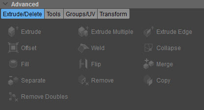

Обзор
Инструменты в разделе «Дополнительно» Designer Tool позволяют манипулировать выбранными вами вершинами/ребрами/полигонами объекта.

Эти инструменты разделены на четыре различные группы:
Инструменты в разделе «Дополнительно» Designer Tool позволяют манипулировать выбранными вами вершинами/ребрами/полигонами объекта.

Эти инструменты разделены на четыре различные группы: